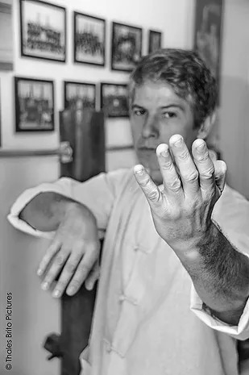
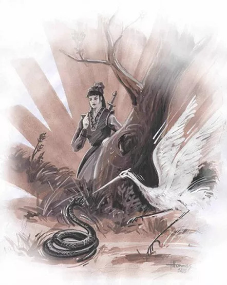
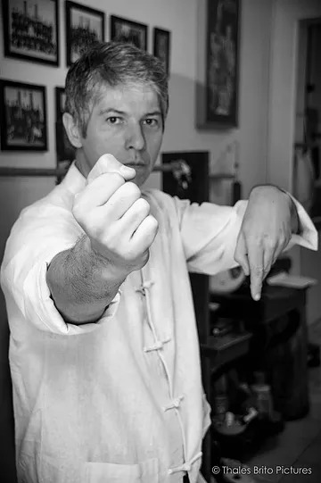
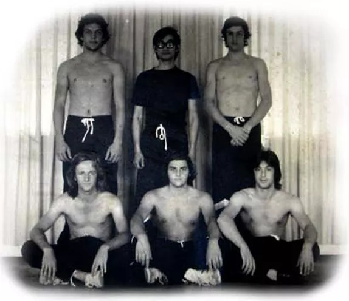

Textos & Artigos
-
Wing Chun & Defesa Pessoal 28 de Fevereiro de 2018 -

Base no Wing Chun 20 de Janeiro de 2017 -
 Entrevista com Sifu Thomas Pinheiro 04 de Novembro de 2016


-
 Análise da História do Wing Chun: Ng Mui a Yip Man 07 de Maio de 2014 -

Aquecimento para o Treino 07 de Maio de 2014 -
 Em Busca da Arte Marcial 07 de Maio de 2014


-

Sifu Thomas Pinheiro na Venezuela 06 de Maio de 2014 -
 Tradição 06 de Maio de 2014 -

Treinando Chi Sau 06 de Maio de 2014